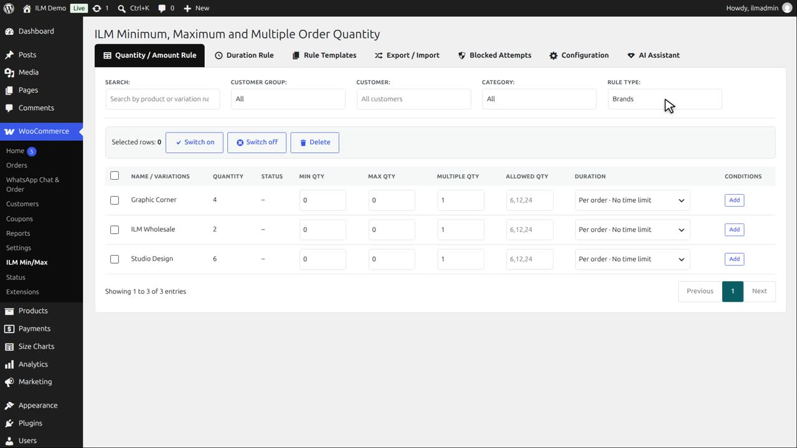
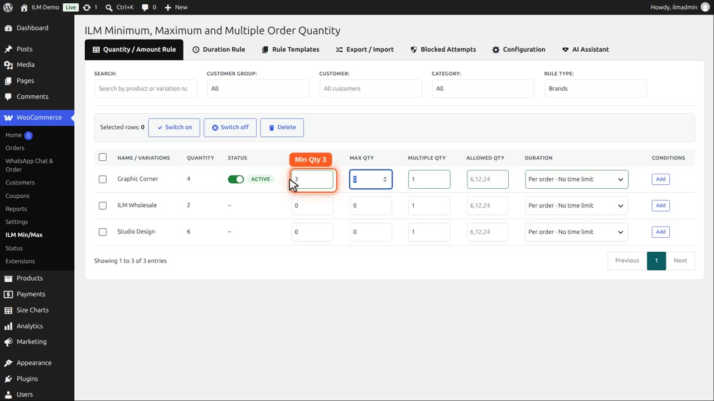
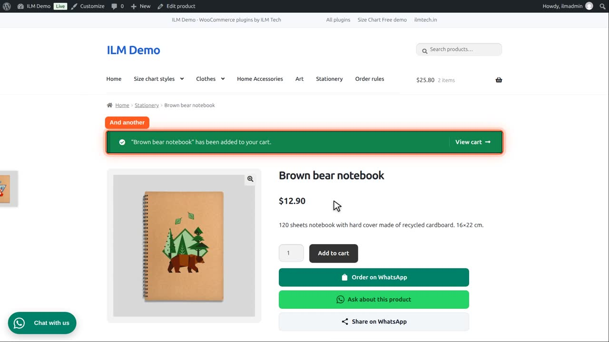
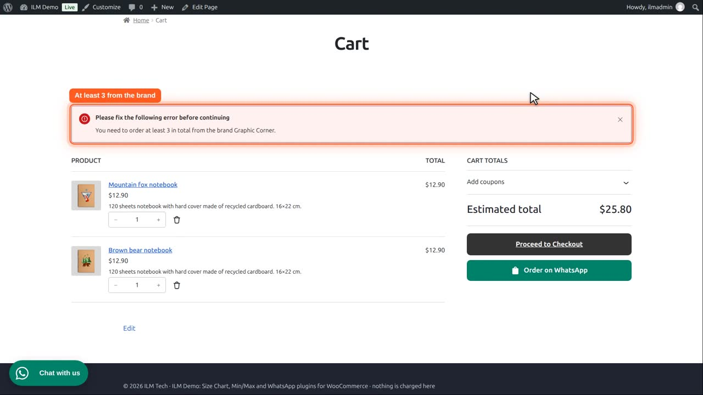

Pro add-on. This feature needs the Pro add-on. See Free and Pro.
| Level | What it does |
|---|---|
| Brand Rule | Attach a rule to every product of a brand. |
Apply Rule to Individual Products (shown for Category / Brand / Tag / User Role / Global): Enable checks the limit separately for each product under that rule; Disable pools every product under the rule into one shared total.
Set Rule Type to Brand. The table lists your brands.

Graphic Corner makes our notebooks and prints. Type three in Min Qty.

On the Brand Rule card, disable Apply Rule to Individual Products. The brand products are added up: three in total, in any mix.
A customer adds one Mountain fox notebook,
and one Brown bear notebook.

Two products of the brand are not enough. The cart asks for at least three in total from the brand, and checkout refuses the order.

They add one more notebook. Three in total: the message is gone. With Apply Rule to Individual Products enabled, each product would need three on its own.